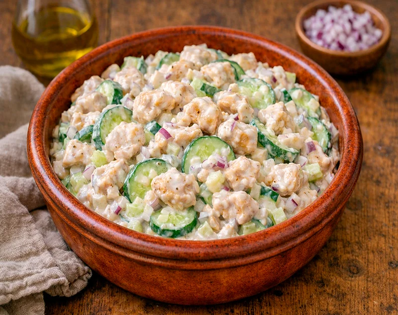

Receta saludable
Ensalada cremosa de pollo y yogur
Un plato fresco, fácil y alto en proteína, con pechuga de pollo, yogur griego, pepino, cebolla y un toque de limón para una comida ligera pero muy saciante.
Ingredientes
- 160 g de pechuga de pollo cruda
- 200 g de yogur griego 2 %
- 150 g de pepino holandés
- 30 g de cebolla
- 1 diente de ajo
- 10 g de zumo de limón
- 1 cucharadita de aceite de oliva
- Sal
- Pimienta negra
Preparación
- Cocina la pechuga de pollo en una sartén con la cucharadita de aceite hasta que quede bien hecha y dorada por fuera.
- Déjala templar unos minutos y córtala en trozos o tiras.
- Pica el pepino, la cebolla y el ajo muy finos.
- En un bol mezcla el yogur griego con el zumo de limón, sal y pimienta.
- Añade el pepino, la cebolla, el ajo y el pollo cocinado.
- Remueve bien hasta que quede todo integrado y sirve al momento o deja enfriar un rato si la prefieres más fresca.
Consejo práctico
Si la dejas reposar 15 o 20 minutos en la nevera antes de comerla, el yogur, el limón y el ajo se integran mejor y el sabor gana bastante.